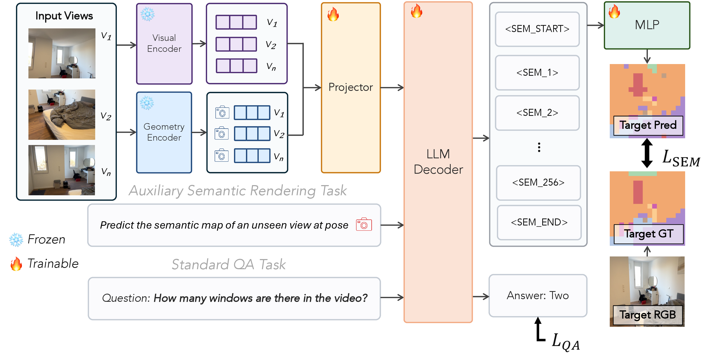
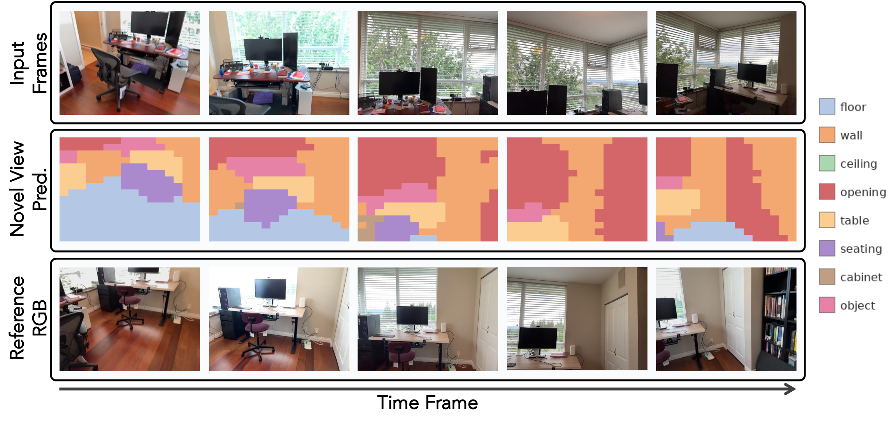
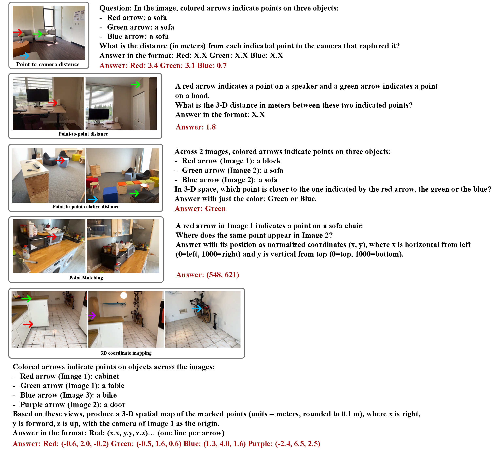

Recent works augment Vision-Language Models with geometry features from pretrained 3D models, expecting that the geometric signal will boost spatial reasoning. However, we find that simply fusing geometry features and training on standard spatial QA yields only marginal improvements on high-level multi-hop tasks. We attribute this gap to a training-signal problem: standard spatial QA can be largely answered from visual features and language priors, so the geometry pathway receives weak gradients and fails to integrate with the visual features. To provide a training signal that requires geometry, we propose novel-view semantic rendering as an auxiliary training task that requires the model to predict the semantic layout of an unobserved viewpoint, inspired by humans' ability to mentally simulate novel viewpoints during spatial reasoning. This task encourages joint use of both pathways: geometry provides pose-dependent visibility, while vision provides semantic content. Our auxiliary task yields consistent improvements over the geometry-augmented baseline across all three benchmarks (up to +1.6 on VSI-Bench, +2.2 on ReVSI, +2.9 on our 3D-Point-QA dataset), and our full model surpasses prior open-source methods on VSI-Bench and on ReVSI.

Our model jointly supports semantic novel-view rendering and standard QA, sharing a backbone and differing only in prompt and output head. Input views are encoded into visual and geometry features, fused via cross-attention, and passed to the LLM decoder. For novel-view semantic rendering, we extract a camera token from the target view via the geometry encoder and prepend it to the prompt; the LLM produces 256 output tokens, one per target patch in raster order, each mapped to a semantic class by a 2-layer MLP. For standard QA, the prompt only contains the question, and the LLM generates the answer without using the rendering MLP.
Evaluated with 128 input views. R2R with the Qwen3-VL backbone achieves 74.4 average accuracy, the best among all compared methods, with less training data. Best results are bolded. #QA denotes the number of spatial training QAs. 9B parameters include the frozen geometry encoder.
| Methods | Backbone | #Params | #QA | Avg. | Numerical Answer | Multiple-Choice Answer | ||||||
|---|---|---|---|---|---|---|---|---|---|---|---|---|
| Obj. Count | Abs. Dist. | Obj. Size | Room Size | Rel. Dist. | Rel. Dir. | Route Plan | Appr. Order | |||||
| Baseline | ||||||||||||
| Chance (Frequency) | – | – | – | 34.0 | 62.1 | 32.0 | 29.9 | 33.1 | 25.1 | 47.9 | 28.4 | 25.2 |
| Proprietary Models (API) | ||||||||||||
| GPT-4o | – | – | – | 34.0 | 46.2 | 5.3 | 43.8 | 38.2 | 37.0 | 41.3 | 31.5 | 28.5 |
| Gemini-2.5 Pro | – | – | – | 51.5 | 43.8 | 34.9 | 64.3 | 42.8 | 61.1 | 47.8 | 45.9 | 71.3 |
| Open-source Fine-tuned Models | ||||||||||||
| VLM-3R | LLaVA-NeXT | 7B | 208K | 60.9 | 70.2 | 49.4 | 69.2 | 67.1 | 65.4 | 80.5 | 45.4 | 40.1 |
| VG-LLM | Qwen2.5-VL | 9B | 442K | 62.2 | 71.4 | 56.8 | 69.0 | 69.1 | 67.9 | 83.2 | 47.4 | 32.5 |
| SenseNova-SI | InternVL3 | 8B | 8M | 68.8 | 72.0 | 53.5 | 76.8 | 72.8 | 69.6 | 80.8 | 48.5 | 76.4 |
| GeoThinker | Qwen3-VL | 9B | 1.1M | 72.6 | – | – | – | – | – | – | – | – |
| Cambrian-S | Qwen2.5 | 7B | 590K | 67.5 | 73.2 | 50.5 | 74.9 | 72.2 | 71.1 | 76.2 | 41.8 | 80.1 |
| Cambrian-P | Cambrian-S | 7B | 590K | 73.7 | 74.9 | 60.1 | 76.0 | 76.9 | 74.8 | 89.5 | 52.6 | 85.0 |
| Render2Reason | InternVL3.5 | 9B | 394K | 67.3 | 72.0 | 51.9 | 71.8 | 68.2 | 68.2 | 83.5 | 45.9 | 76.4 |
| Render2Reason | Qwen3-VL | 9B | 394K | 74.4 | 75.0 | 64.1 | 78.3 | 75.0 | 80.0 | 88.4 | 48.5 | 85.9 |
ReVSI evaluates spatial reasoning across seven question types with manually refined annotations conditioned on the input frame count. All methods are compared with 64+ input frames. Best results are bolded. #QA denotes the number of geometry QAs generated with ground truth. 9B parameters include the geometry encoder.
| Methods | Backbone | #Params | #QA | Avg. | Numerical Answer | Multiple-Choice Answer | |||||
|---|---|---|---|---|---|---|---|---|---|---|---|
| Obj. Count | Abs. Dist. | Obj. Size | Room Size | Rel. Dist. | Rel. Dir. | Route Plan | |||||
| Baseline | |||||||||||
| Chance (Frequency) | – | – | – | 31.4 | 52.2 | 40.1 | 17.4 | 20.9 | 25.8 | 31.9 | 30.2 |
| Proprietary Models (64+ Frames) | |||||||||||
| GPT-5.2 | – | – | – | 50.9 | 56.2 | 41.5 | 73.9 | 63.0 | 48.4 | 34.9 | 38.2 |
| Gemini 3 Pro | – | – | – | 60.9 | 60.1 | 54.7 | 79.3 | 51.9 | 68.1 | 56.0 | 56.4 |
| Open-source Fine-tuned Models (64+ Frames) | |||||||||||
| VST | Qwen2.5-VL | 7B | 4.2M | 46.4 | 35.4 | 52.6 | 67.9 | 47.2 | 49.2 | 36.9 | 35.4 |
| VLM-3R | LLaVA-NeXT | 7B | 208K | 50.2 | 42.0 | 61.4 | 64.6 | 51.1 | 46.2 | 49.2 | 36.9 |
| Cambrian-S | Qwen2.5 | 7B | 590K | 49.1 | 48.4 | 60.5 | 65.5 | 46.7 | 37.1 | 48.5 | 37.0 |
| Cambrian-P | Cambrian-S | 7B | 590K | 52.0 | 41.4 | 68.3 | 66.7 | 45.9 | 40.2 | 48.7 | 53.1 |
| Render2Reason | InternVL3.5 | 9B | 394K | 51.4 | 38.4 | 60.0 | 60.5 | 52.3 | 42.9 | 50.3 | 55.2 |
| Render2Reason | Qwen3-VL | 9B | 394K | 54.5 | 42.2 | 74.0 | 67.3 | 58.5 | 41.3 | 51.6 | 46.6 |
We report results on VSI-Bench and ReVSI (16 frames) and on 3D-Point-QA. Sem. refers to semantic rendering. Best results are bolded. In (e), all models include VGGT features; we disable the geometry pathway at inference.
(a) Components (InternVL)
| Methods | VSI | ReVSI | 3DPQA |
|---|---|---|---|
| Finetuned | 62.9 | 44.9 | 55.3 |
| + VGGT | 63.0 | 45.8 | 57.0 |
| + VGGT + Sem. | 64.6 | 48.0 | 59.9 |
(b) Components (Qwen)
| Methods | VSI | ReVSI | 3DPQA |
|---|---|---|---|
| Finetuned | 66.0 | 50.7 | 72.2 |
| + VGGT | 67.0 | 51.5 | 77.1 |
| + VGGT + Sem. | 68.2 | 52.5 | 80.0 |
(c) GeoSR comparison (Qwen)
| Methods | VSI | ReVSI | 3DPQA |
|---|---|---|---|
| Baseline | 67.0 | 51.5 | 77.1 |
| GeoSR | 67.2 | 50.7 | 84.8 |
| Ours | 68.2 | 52.5 | 80.0 |
(d) Rendering target (InternVL)
| Target | VGGT | VSI | ReVSI | 3DPQA |
|---|---|---|---|---|
| Sem. | ✗ | 61.6 | 45.9 | 60.6 |
| RGB | ✓ | 62.4 | 45.2 | 60.2 |
| RGB + Sem. | ✓ | 62.6 | 46.6 | 61.1 |
| Sem. | ✓ | 64.6 | 48.0 | 59.9 |
(e) Geometry removal in inference
| Methods | VSI | ReVSI | 3DPQA |
|---|---|---|---|
| InternVL | −6.3 | −5.5 | −6.4 |
| + Sem. | −6.7 | −7.3 | −7.0 |
| Qwen | −2.3 | −5.2 | −5.2 |
| + Sem. | −4.2 | −8.9 | −8.7 |
(f) Grid resolution (InternVL)
| Grid | VSI | ReVSI | 3DPQA |
|---|---|---|---|
| 8 × 8 | 64.9 | 46.2 | 53.0 |
| 16 × 16 | 64.6 | 48.0 | 59.9 |
| 32 × 32 | 64.3 | 48.4 | 56.6 |
Effect of auxiliary task. Adding novel-view semantic rendering on top of VGGT features improves all three benchmarks on both backbones (+1.6, +2.2, and +2.9 on VSI-Bench, ReVSI, and 3D-Point-QA for InternVL; +1.2, +1.0, and +2.9 for Qwen). Without VGGT, the auxiliary task alone improves 3D-Point-QA and ReVSI but hurts VSI-Bench (−1.3), while VGGT alone yields only marginal gains, indicating the two are complementary.
Semantic vs. RGB supervision. RGB supervision improves low-level metrics, particularly point matching, but underperforms semantic supervision on high-level reasoning (VSI-Bench, ReVSI), likely because appearance-level prediction does not tie geometry to object-level semantics. We therefore use semantic rendering as our default supervision target.
Performance without geometry at inference. Removing the geometry pathway at inference hurts the auxiliary-task models more on both backbones and all three benchmarks, especially on Qwen, suggesting that our auxiliary task encourages the model to rely more on geometry features.
Comparison with GeoSR. GeoSR achieves a higher 3D-Point-QA score (84.8 vs. 80.0), but our method outperforms it on VSI-Bench (+1.0) and ReVSI (+1.8), since multi-hop spatial reasoning requires both geometric and object-level semantic understanding.
We evaluate auxiliary semantic rendering on 5K held-out samples where the target view occurs 1 second after the last input frame. Our model (InternVL3.5-4B) achieves 44.7% mIoU and 67.0% patch accuracy. An oracle baseline that copies the best-matching input frame's semantic map for each target frame achieves 35.6% mIoU and 57.6% patch accuracy, indicating that the model accounts for viewpoint changes rather than copying an observed layout.

We visualize novel-view semantic renderings along a forward-moving camera trajectory. The first row shows the five initial RGB input frames. Each prediction uses the five RGB frames right before its target frame: the first prediction uses all five frames in row 1; the second uses frames 2–5 from row 1 and the first RGB frame in row 3; and so on.
We construct 3D-Point-QA, a dataset with low-level reasoning tasks (with visual and textual point prompts) that should be straightforward to answer given camera poses and point clouds without object-level reasoning. The dataset includes point-to-camera distance, point-to-point distance, relative distance comparison, point matching, and 3D coordinate mapping. We extract 100K training and 5K validation QAs from ground-truth meshes in ScanNet++ following the official splits.

This work is supported in part by NSF IIS grant 2312102. S.W. is supported by NSF 2331878 and 2340254, and research grants from Intel, Amazon, and IBM. This research used both the DeltaAI advanced computing and data resource, which is supported by the National Science Foundation (award OAC 2320345) and the State of Illinois, and the Delta advanced computing and data resource which is supported by the National Science Foundation (award OAC 2005572) and the State of Illinois. Delta and DeltaAI are joint efforts of the University of Illinois Urbana-Champaign and its National Center for Supercomputing Applications.